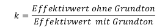
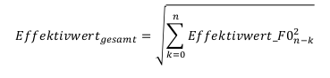
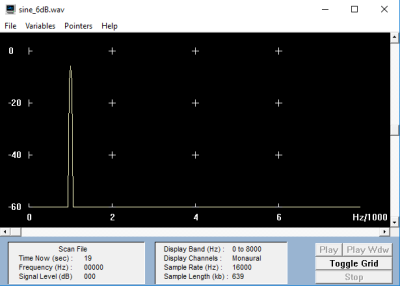
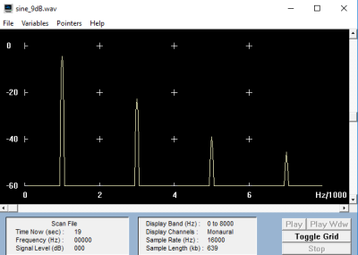
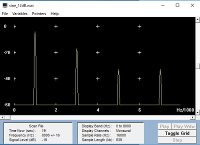

Einleitung: Die Manipulation von digitalisierten Signalen, wie wir sie z.B. in Reaktor antreffen (Mixing, Filterung, Effekte, etc.), kann man allgemein darstellen als die Funktion sog. Diskreter Systeme, die eine Eingangsfolge von Abtastwerten x(k) in eine Ausgangsfolge y(k) überführen:
Das heißt, D[x(k)] = y(k). Diskrete Systeme können sowohl hardwaremäßig als auch softwaremäßig realisiert werden. Wir wollen uns im Rahmen der Übung mit relativ einfachen diskreten Systemen beschäftigen. Dabei beschränken wir uns auf Systeme, die die Elemente Addierer, Multiplizierer und Verzögerung enthalten. Diese bezeichnet man auch als lineare zeitinvariante Systeme, da die resultierenden Folgen stets lineare Kombinationen von Eingangsfolgen sind und sich das Verhalten der Systeme in Abhängigkeit von der Zeit nicht ändert.
1. Addierer: Es gilt: y(k) = x1(k) + x2(k). Zwei Abtastwertefolgen x1(k) und x2(k) werden addiert und ergeben eine Ausgangsfolge y(k). Einem Mixing liegt immer eine Addition zugrunde.
2. Multiplizierer: Es gilt: y(k) = a * x(k). Eine Abtastwertfolge wird mit einem konstanten reellen Faktor a multipliziert.
3. Verzögerung: Es gilt: y(k) = x(k-1). Ein Abtastwert wird für eine Abtastperiode zwischen- gespeichert und dann ausgegeben. Nutze für die Aufgaben die euch schon bekannte wave_io. Für die Übung benötigt ihr außerdem eure Musik- und Sprachaufnahme, sowie eine 1kHz Sinusfunktion und Weißes Rauschen (moodle).
Ein Maß für die Verzerrung ist der sogenannte Klirrfaktor k, der für eine periodische Schwingung folgendermaßen definiert ist:
Den Effektivwert mit und ohne Grundton Effektivwert gesamt einer harmonischen Schwingung berechnet man, indem man die auf den Grundton bezogenen Amplituden der Obertöne quadriert, addiert und aus dem Resultat die Wurzel zieht:
a. Zunächst sollt ihr eure Musikdatei um 3, 6 und 9 dB verstärken. Dies realisiert ihr durch Multiplikation der Abtastwerte mit dem entsprechenden konstanten Verstärkungsfaktor, den ihr aus der dB-Angabe berechnen müsst. Dabei wird es bei hoher Verstärkung zwangsläufig zu einem sogenannten Clipping kommen, d.h. das Produkt aus der Originalamplitude und dem Verstärkungsfaktor ist betragsmäßig größer als der maximal darstellbare Amplitudenwert (bei 16 bit < -32768 bzw.> 32767). In diesem Fall muss dafür gesorgt werden, dass der resultierende Wert auf genau -32768, bzw. 32767 gesetzt wird. Clipping ist akustisch als immer stärker werdende nichtlineare Verzerrung wahrnehmbar.
b. Bei welcher Verstärkung wird eine Verzerrung wahrnehmbar? Falls +9 dB nicht reichen, in 3 dB-Schritten die Verstärkung erhöhen!
c. Ihr sollt nun die 1kHz-Sinusschwingung um 6, 9 und 12 dB verstärken und den resultierenden Klirrfaktor k berechnen. Der Klirrfaktor lässt sich aus dem Frequenzspektrum berechnen (GRAM: FFT 512, alle sichtbaren Obertöne für die Berechnung berücksichtigen!). Beachte: Die dB-Angaben müssen aus GRAM in lineare Angaben zurückgerechnet werden.
Ins Übungsprotokoll: Sourcecode, wavs Musik und Sinus, Ausschnitte vom Clipping (Samplitude), Frequenzspektrum der verstärkten Sinussignale (GRAM), Berechnungen Klirrfaktor k.
1.a
Lösung
short max = Short.MAX_VALUE;
short min = Short.MIN_VALUE;
double db = 12;
for (int i=0; i < samples;i++) {
short sample = readWavFile.sound[i];
short rSample = 0;
double vf = Math.pow(10, db/20);
double r = sample * vf;
if(r > max) {
rSample = max;
}else if(r < min) {
rSample = min;
}else {
rSample = (short)r;
}
readWavFile.sound[i] = rSample;
}Aufnahme bei 3dB
Aufnahme bei 6dB
Aufnahme bei 9dB
1.b
Lösung
Es ist eine Verzerung bei 9dB leicht zu hören verstärkt zu erkennen ist sie bei 12dB
Aufnahme bei 12dB
1.c
Lösung
Frequensspektrum
6dB

9db

12dB

Clipping
sine_wav
6dB
9dB
12dB
Berechnungen des Klirrfaktor
| Frequenzen Hz | Starpoint | 6 dB | 9 dB | 12 dB |
|---|---|---|---|---|
| 1000 | 0 | -6 | -2 | -3 |
| 3000 | n/a | 0 | -23 | -17 |
| 5000 | n/a | 0 | -39 | -32 |
| 7000 | n/a | 0 | -45 | -33 |
Klirrfaktor
9db ~ 1,1387
12db ~ 0,9981
Ein wichtiger Effekt in der Studiotechnik ist das Echo. Dabei wird zu einem Signal eine zeitverzögerte und in der Amplitude gedämpfte Überlagerung hinzugemischt:
y(k) = x(k) + a * x(k-T), wobei T eine ganze Zahl zwischen 1 und N ist
a. Implementiert ein Echo mit einer Verzögerung von 10, 100 und 200ms und dem Verstärkungsfaktor a = 0.6. Wendet das Echo auf eure Sprach- und Musiksignal an. Es kann sein, dass die 10ms nur bei einem recht trockenen Soundfile wie der Sprachaufnahme hörbar werden. Hinweis: Bei Stereodateien muss berücksichtigt werden, dass linker und rechter Kanal getrennt verzögert werden müssen. Die Samples für links und rechts liegen im Samplearray jeweils hintereinander. Es muss für den Ergebnissound ein neues Objekt kreiert werden!
b. Um wieviel Abtastwerte müssen wir verzögern, wenn wir mit einer Abtastrate von 44.1 kHz arbeiten? Ins Übungsprotokoll: Sourcecode, wavs Sprache und Musik
Lösung
2.a
//MONO
double delay= 200;
int n = (int) (delay/1000 * sampleRate);
short[] echo = new short[readWavFile.sound.length];
for (int i=0; i < samples;i++) {
if(i >= n) {
echo[i] = (short) ((readWavFile.sound[i] * 0.5) + (0.5 * 0.6 *readWavFile.sound[i - n]));
}else {
echo[i] = (short) (readWavFile.sound[i] * 0.5);
}
}// Stereo
double sDelay = 10;
int sN = (int) (2*(sDelay/1000 * sampleRate));
short[] sEcho = new short[readWavFile.sound.length];
for (int i=0; i < samples/2;i++) {
if(i >= sN) {
sEcho[i] = (short) ((readWavFile.sound[i] * 0.5) + (0.5 * 0.6 *readWavFile.sound[i - sN]));
}else {
sEcho[i] = (short) (readWavFile.sound[i] * 0.5);
}
}Sprache 10ms
Sprache 100ms
Sprache 200ms
Musik 10ms
Musik 100ms
Musik 200ms
2.b
N = Verzögerung * Abtastfrequenz
N = 10 ms * 44.1 kHz = 441 Abtastwerte
N = 100 ms * 44.1 kHz = 4410 Abtastwerte
N = 200 ms * 44.1 kHz = 8820 Abtastwerte
a. Ein sehr einfaches Filter kann man z.B. mit der Zuordnungsvorschrift:
y(k) = 0.5 * x(k) + 0.45 * x(k-1)
realisieren. Programmiert das Filter und vergleicht die Musikdatei vor und nach der Filterung. Tut dasselbe mit der Zuordnungsvorschrift:
y(k) = 0.5 * x(k) - 0.45 * x(k-1)
b. Zum Testen der Filter verwendet Weißes Rauschen, das alle Frequenzen enthält. Wenn wir nun den Frequenzverlauf des Originalaudios mit dem gefilterten vergleichen, muss sich ein Verlauf wie in der unteren Darstellung ergeben. Um eine Glättung des Spektrums zu erzielen, bei GRAM 'Spectrum Average' auf 100 setzen. Um was für eine Art Filter handelt es sich jeweils?
Ins Übungsprotokoll: Sourcecode, wavs Musik und Rauschen, Frequenzverlauf GRAM
Lösung
3.a
short[] filter = new short[readWavFile.sound.length];
for(int i=2; i < i++) {
filter[i]= (short)(readWavFile.sound[i] * 0.5 + 0.45 * readWavFile.sound[i-2]);
}
for(int i=2; i < samples; i++) {
filter[i]= (short)(readWavFile.sound[i] * 0.5 - 0.45 * readWavFile.sound[i-2]);
}Musik Aufnahme
Musik minus
Musik plus
3.b
Weißes Rauschen
Rauschen minus
Rauschen plus
Frequenzverluaf
Weißes Rauschen
Weißes Rauschen plus
Weißes Rauschen minus